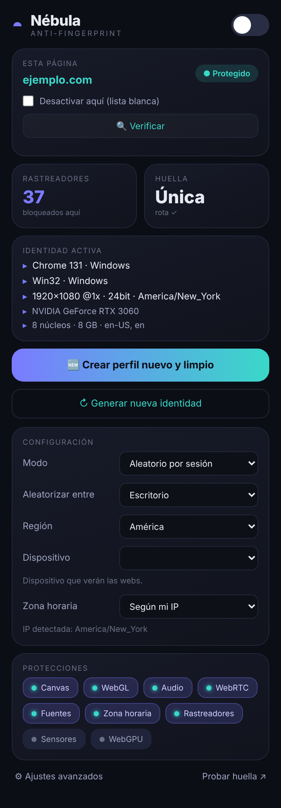
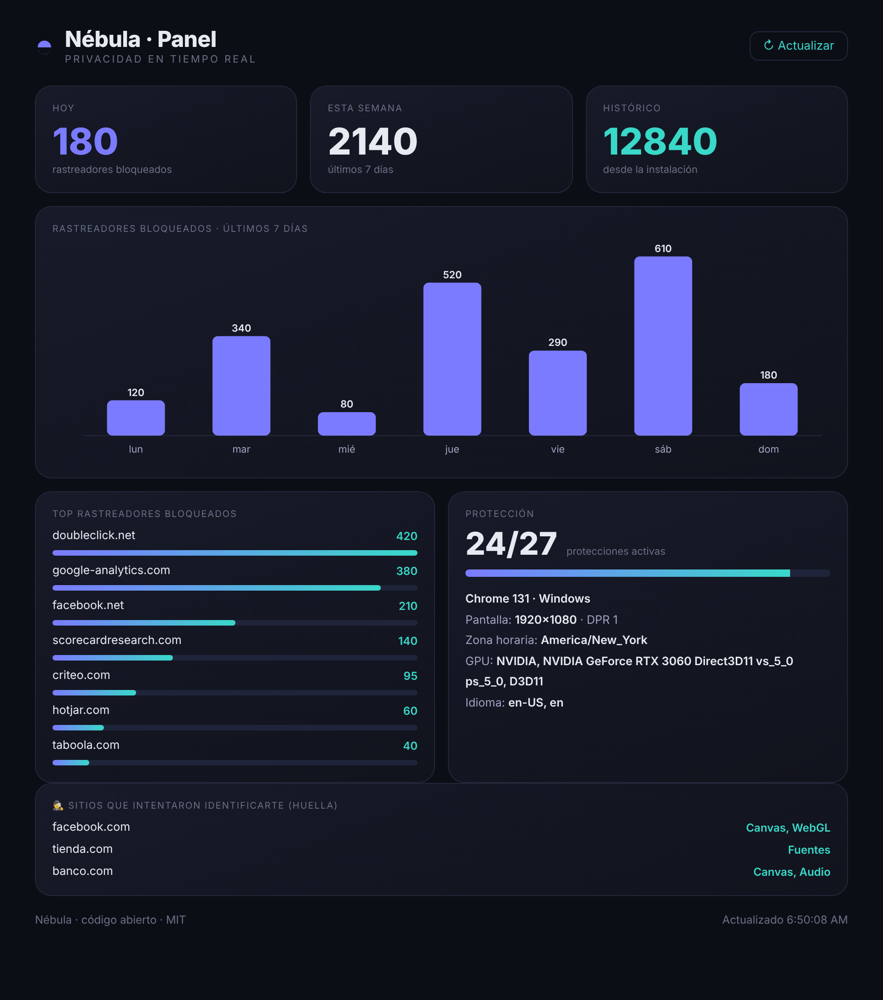

Nébula rompe tu huella digital y bloquea rastreadores. Los sitios ya no pueden identificarte por tu canvas, WebGL, fuentes, User-Agent o zona horaria. Todo local, sin recoger nada.
Chrome · Edge · Brave · Opera · navegadores Chromium
Una suite completa de privacidad, no solo un bloqueador.
Canvas, WebGL, audio, fuentes, User-Agent, pantalla, zona horaria, WebRTC… con ruido por sitio y una identidad consistente en JS y cabeceras HTTP.
~59 dominios de analytics/ads/session-replay, con contador en vivo.
Te sugiere el perfil ideal por sitio (gratis, con Pollinations o tu propia key).
Rastreadores bloqueados por día y qué sitios intentaron identificarte.
Fija zona horaria e idioma de otro país. Ideal con VPN.
Cierra avisos de cookies y quita parámetros de rastreo (utm_, fbclid…).
Perfiles guardados, rotación automática y "perfil nuevo limpio".

Enciende/apaga, elige dispositivo, modo y zona horaria, y mira cuántos rastreadores bloqueaste — todo desde un popup moderno estilo bento.
Gráficas de rastreadores bloqueados, top de rastreadores, cobertura de protección y el registro de qué sitios intentaron leer tu huella.

Mira lo que los sitios ven de ti. Instala Nébula, recarga esta página y compara: los hashes deberían cambiar y tu identidad verse distinta.
Instálala en 30 segundos en cualquier navegador Chromium.
1) Descarga/clona el repo · 2) chrome://extensions → Modo desarrollador ·
3) "Cargar descomprimida" → carpeta nebula.
No. Cero telemetría, cero servidores. Todo ocurre en tu navegador. Es código abierto: puedes auditarlo.
Esos sitios comprueban que tu navegador no esté manipulado — justo lo que hace Nébula. Para ellos usa la lista blanca (Nébula trae un aviso automático con un botón para desactivarse ahí).
No existe tal cosa. Nébula rompe la unicidad y estabilidad de tu huella para que seas mucho más difícil de rastrear, pero capas de red (TCP/TLS) no se pueden cambiar desde una extensión.
Sí, totalmente gratis y de código abierto (licencia MIT).